Last updated: 2021-10-25
Checks: 6 1
Knit directory: 2021-rosmap-ire/
This reproducible R Markdown analysis was created with workflowr (version 1.6.2). The Checks tab describes the reproducibility checks that were applied when the results were created. The Past versions tab lists the development history.
The R Markdown file has unstaged changes. To know which version of the R Markdown file created these results, you’ll want to first commit it to the Git repo. If you’re still working on the analysis, you can ignore this warning. When you’re finished, you can run wflow_publish to commit the R Markdown file and build the HTML.
Great job! The global environment was empty. Objects defined in the global environment can affect the analysis in your R Markdown file in unknown ways. For reproduciblity it’s best to always run the code in an empty environment.
The command set.seed(20211022) was run prior to running the code in the R Markdown file. Setting a seed ensures that any results that rely on randomness, e.g. subsampling or permutations, are reproducible.
Great job! Recording the operating system, R version, and package versions is critical for reproducibility.
Nice! There were no cached chunks for this analysis, so you can be confident that you successfully produced the results during this run.
Great job! Using relative paths to the files within your workflowr project makes it easier to run your code on other machines.
Great! You are using Git for version control. Tracking code development and connecting the code version to the results is critical for reproducibility.
The results in this page were generated with repository version d04ae02. See the Past versions tab to see a history of the changes made to the R Markdown and HTML files.
Note that you need to be careful to ensure that all relevant files for the analysis have been committed to Git prior to generating the results (you can use wflow_publish or wflow_git_commit). workflowr only checks the R Markdown file, but you know if there are other scripts or data files that it depends on. Below is the status of the Git repository when the results were generated:
Ignored files:
Ignored: .DS_Store
Ignored: .Rapp.history
Ignored: .Rproj.user/
Ignored: code/.DS_Store
Ignored: data/.DS_Store
Ignored: data/confidentialData/
Unstaged changes:
Modified: analysis/first-analysis.Rmd
Modified: analysis/snakemake_pipeline.Rmd
Note that any generated files, e.g. HTML, png, CSS, etc., are not included in this status report because it is ok for generated content to have uncommitted changes.
These are the previous versions of the repository in which changes were made to the R Markdown (analysis/first-analysis.Rmd) and HTML (docs/first-analysis.html) files. If you’ve configured a remote Git repository (see ?wflow_git_remote), click on the hyperlinks in the table below to view the files as they were in that past version.
| File | Version | Author | Date | Message |
|---|---|---|---|---|
| Rmd | d04ae02 | Karissa Barthelson | 2021-10-23 | msore QC |
| html | d04ae02 | Karissa Barthelson | 2021-10-23 | msore QC |
| Rmd | 189974b | Karissa Barthelson | 2021-10-23 | more QC |
| html | 189974b | Karissa Barthelson | 2021-10-23 | more QC |
| Rmd | 6acc956 | Karissa Barthelson | 2021-10-23 | added PCA |
| html | 6acc956 | Karissa Barthelson | 2021-10-23 | added PCA |
| Rmd | eed2e7f | Karissa Barthelson | 2021-10-22 | day 1 |
| html | eed2e7f | Karissa Barthelson | 2021-10-22 | day 1 |
| Rmd | fa46de3 | Karissa Barthelson | 2021-10-22 | day 1 |
| html | fa46de3 | Karissa Barthelson | 2021-10-22 | day 1 |
| Rmd | dcd0ecf | Karissa Barthelson | 2021-10-22 | anther commit |
| html | dcd0ecf | Karissa Barthelson | 2021-10-22 | anther commit |
| html | c07e1e0 | Karissa Barthelson | 2021-10-22 | Build site. |
| html | da3a493 | Karissa Barthelson | 2021-10-22 | Build site. |
| html | 9583672 | Karissa Barthelson | 2021-10-22 | Build site. |
| html | bbc759c | Karissa Barthelson | 2021-10-22 | Build site. |
| html | a12648a | Karissa Barthelson | 2021-10-22 | Build site. |
| html | 3a8906d | Karissa Barthelson | 2021-10-22 | Build site. |
| html | 17422c8 | Karissa Barthelson | 2021-10-22 | Build site. |
| Rmd | 8f3fd30 | Karissa Barthelson | 2021-10-22 | Add my first analysis |
library(tidyverse)
library(magrittr)
library(pander)
library(AnnotationHub)
library(ggpubr)
library(ggfortify)
library(ggrepel)
library(ggeasy)
library(edgeR)
library(scales)
library(ngsReports)
library(pheatmap)
library(sva)theme_set(theme_bw())
panderOptions("big.mark", ",")
panderOptions("table.split.table", Inf)
panderOptions("table.style", "rmarkdown")# Note that this chunk takes a while to run, and requires internet connection
ah <- AnnotationHub() %>%
subset(species == "Homo sapiens") %>%
subset(rdataclass == "EnsDb")
ensDb <- ah[["AH75011"]] # for release 98, which is the genome version I aligned to
grTrans <- transcripts(ensDb)
trLengths <- exonsBy(ensDb, "tx") %>%
width() %>%
vapply(sum, integer(1))
mcols(grTrans)$length <- trLengths[names(grTrans)]
gcGene <- grTrans %>%
mcols() %>%
as.data.frame() %>%
dplyr::select(gene_id, tx_id, gc_content, length) %>%
as_tibble() %>%
group_by(gene_id) %>%
summarise(
gc_content = sum(gc_content*length) / sum(length),
length = ceiling(median(length))
)
grGenes <- genes(ensDb)
mcols(grGenes) %<>%
as.data.frame() %>%
left_join(gcGene) %>%
as.data.frame() %>%
DataFrame()In order to perform adequate QC, an EnsDb object was obtained for Ensembl release 98 using the AnnotationHub package. This provided the GC content and length for each of the 250,194 transcripts contained in that release.
meta <-
read_csv("data/confidentialData/ROSMAP-IN_assay_RNAseq_metadata.csv") %>%
dplyr::select(specimenID, RIN, rnaBatch, libraryBatch, sequencingBatch) %>%
left_join(read_csv("data/confidentialData/ROSMAP-IN_invitro_biospecimen_metadata.csv")) %>%
left_join(read_csv("data/confidentialData/ROSMAP-IN_individual_metadata.csv")) %>%
mutate(experimentor = str_extract(.$specimenID,
pattern = "(AH|VL)"),
temp = str_remove(.$specimenID,
pattern = "(AH|VL)") %>%
str_remove(pattern = "_BR[0-9]+"),
sample = paste0(experimentor, ".s", temp),
apoeGenotype = case_when(
apoeGenotype == 22 ~ "E2/E2",
apoeGenotype == 23 ~ "E2/E3",
apoeGenotype == 33 ~ "E3/E3",
apoeGenotype == 34 ~ "E3/E4",
apoeGenotype == 44 ~ "E4/E4",
)
) %>%
dplyr::select(sample, experimentor, everything())# make some new cols to match the names in the gene counts matrix
featureCounts <-
read_delim("data/confidentialData/counts.out", delim = "\t", skip = 1) %>%
set_names(basename(names(.))) %>%
as.data.frame() %>%
dplyr::select(-c(Chr, Start, End, Length, Strand)) %>%
as_tibble %>%
column_to_rownames("Geneid")
# tidy up colnames
colnames(featureCounts) %<>%
str_remove(".Aligned.sortedByCoord.out.bam")fastqc_raw <- list.files(
path = "data/confidentialData/fastqc_raw/",
pattern = "zip",
recursive = TRUE,
full.names = TRUE
) %>%
FastqcDataList()Strange peaks are observed with 100% GC content. After a quick google search, it appears these are sequeniccng artefacts.
plotGcContent(
x = fastqc_raw,
plotType = "line",
gcType = "Transcriptome"
) +
theme(legend.position = "none")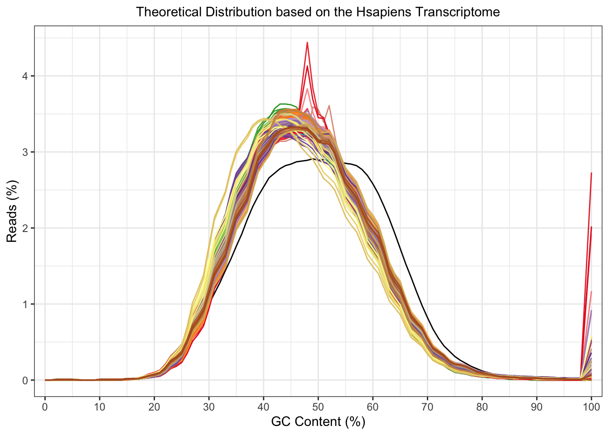
There doesn’t appear to be any over-represented sequences which are worrying. The top ones are mostly adaptors which are removed in the snakemake pipeline.
getModule(fastqc_raw, "Overrep") %>%
group_by(Sequence, Possible_Source) %>%
summarise(`Found In` = n(), `Highest Percentage` = max(Percentage)) %>%
arrange(desc(`Highest Percentage`), desc(`Found In`)) %>%
ungroup() %>%
dplyr::slice(1:30) %>%
mutate(`Highest Percentage` = percent_format(0.01)(`Highest Percentage`/100)) %>%
pander(
justify = "llrr",
caption = paste(
"*Top", nrow(.),"Overrepresented sequences.",
"The number of samples they were found in is shown,",
"along with the percentage of the most 'contaminated' sample.*"
)
)| Sequence | Possible_Source | Found In | Highest Percentage |
|---|---|---|---|
| GGGGGGGGGGGGGGGGGGGGGGGGGGGGGGGGGGGGGGGGGGGGGGGGGGGGGGGGGGGGGGGGGGGGGGGGGGG | No Hit | 37 | 3.60% |
| CTTATACACATCTCCGAGCCCACGAGACGTAGAGGAATCTCGTATGCCGTCTTCTGCTTGAAAAAAAAAAGGGGG | TruSeq Adapter, Index 3 (96% over 28bp) | 3 | 1.46% |
| CTTATACACATCTCCGAGCCCACGAGACGGACTCCTATCTCGTATGCCGTCTTCTGCTTGAAAAAAAAAAGGGGG | RNA PCR Primer, Index 27 (96% over 30bp) | 1 | 1.10% |
| CTTATACACATCTCCGAGCCCACGAGACGCTCATGAATCTCGTATGCCGTCTTCTGCTTGAAAAAAAAAAGGGGG | TruSeq Adapter, Index 8 (96% over 29bp) | 1 | 1.01% |
| ATACACATCTCCGAGCCCACGAGACGTAGAGGAATCTCGTATGCCGTCTTCTGCTTGAAAAAAAAAAGGGGGGGG | TruSeq Adapter, Index 3 (96% over 28bp) | 2 | 0.87% |
| CTTATACACATCTCCGAGCCCACGAGACTAGGCATGATCTCGTATGCCGTCTTCTGCTTGAAAAAAAAAAGGGGG | TruSeq Adapter, Index 1 (96% over 28bp) | 1 | 0.60% |
| ATACACATCTCCGAGCCCACGAGACGCTCATGAATCTCGTATGCCGTCTTCTGCTTGAAAAAAAAAAGGGGGGGG | TruSeq Adapter, Index 8 (96% over 29bp) | 1 | 0.59% |
| ATACACATCTCCGAGCCCACGAGACGGACTCCTATCTCGTATGCCGTCTTCTGCTTGAAAAAAAAAAGGGGGGGG | RNA PCR Primer, Index 27 (96% over 30bp) | 1 | 0.58% |
| ACACATCTCCGAGCCCACGAGACGTAGAGGAATCTCGTATGCCGTCTTCTGCTTGAAAAAAAAAAGGGGGGGGGG | RNA PCR Primer, Index 3 (96% over 28bp) | 1 | 0.42% |
| ATACACATCTCCGAGCCCACGAGACTAGGCATGATCTCGTATGCCGTCTTCTGCTTGAAAAAAAAAAGGGGGGGG | TruSeq Adapter, Index 1 (96% over 28bp) | 1 | 0.37% |
| CTTATACACATCTCCGAGCCCACGAGACAAGAGGCAATCTCGTATGCCGTCTTCTGCTTGAAAAAAAAAAGGGGG | RNA PCR Primer, Index 33 (96% over 29bp) | 1 | 0.29% |
| ACACATCTCCGAGCCCACGAGACGCTCATGAATCTCGTATGCCGTCTTCTGCTTGAAAAAAAAAAGGGGGGGGGG | RNA PCR Primer, Index 8 (96% over 29bp) | 1 | 0.29% |
| ACACATCTCCGAGCCCACGAGACGGACTCCTATCTCGTATGCCGTCTTCTGCTTGAAAAAAAAAAGGGGGGGGGG | RNA PCR Primer, Index 27 (96% over 30bp) | 1 | 0.27% |
| CTTATACACATCTCCGAGCCCACGAGACCTCTCTACATCTCGTATGCCGTCTTCTGCTTGAAAAAAAAAAGGGGG | RNA PCR Primer, Index 39 (96% over 30bp) | 1 | 0.26% |
| CTTATACACATCTCCGAGCCCACGAGACCGAGGCTGATCTCGTATGCCGTCTTCTGCTTGAAAAAAAAAAGGGGG | TruSeq Adapter, Index 10 (96% over 28bp) | 2 | 0.24% |
| ACACATCTCCGAGCCCACGAGACTAGGCATGATCTCGTATGCCGTCTTCTGCTTGAAAAAAAAAAGGGGGGGGGG | RNA PCR Primer, Index 1 (96% over 28bp) | 1 | 0.20% |
| ATACACATCTCCGAGCCCACGAGACAAGAGGCAATCTCGTATGCCGTCTTCTGCTTGAAAAAAAAAAGGGGGGGG | RNA PCR Primer, Index 33 (96% over 29bp) | 1 | 0.18% |
| ATACACATCTCCGAGCCCACGAGACCTCTCTACATCTCGTATGCCGTCTTCTGCTTGAAAAAAAAAAGGGGGGGG | RNA PCR Primer, Index 39 (96% over 30bp) | 1 | 0.15% |
| ATACACATCTCCGAGCCCACGAGACCGAGGCTGATCTCGTATGCCGTCTTCTGCTTGAAAAAAAAAAGGGGGGGG | TruSeq Adapter, Index 10 (96% over 28bp) | 2 | 0.15% |
| CTTATACACATCTCCGAGCCCACGAGACTCCTGAGCATCTCGTATGCCGTCTTCTGCTTGAAAAAAAAAAGGGGG | RNA PCR Primer, Index 26 (100% over 29bp) | 1 | 0.14% |
| CTTATACACATCTCCGAGCCCACGAGACCGTACTAGATCTCGTATGCCGTCTTCTGCTTGAAAAAAAAAAGGGGG | TruSeq Adapter, Index 11 (96% over 28bp) | 1 | 0.11% |
| ACACATCTCCGAGCCCACGAGACCGAGGCTGATCTCGTATGCCGTCTTCTGCTTGAAAAAAAAAAGGGGGGGGGG | RNA PCR Primer, Index 10 (96% over 28bp) | 1 | 0.10% |
fastqc_trim <- list.files(path = "data/confidentialData/fastqc_trim",
pattern = "zip",
full.names = TRUE) %>%
FastqcDataList()
trimStats <- readTotals(fastqc_raw) %>%
dplyr::rename(Raw = Total_Sequences) %>%
left_join(readTotals(fastqc_trim), by = "Filename") %>%
dplyr::rename(Trimmed = Total_Sequences) %>%
dplyr::filter(grepl("r1", Filename)) %>%
mutate(
Discarded = 1 - Trimmed / Raw,
Retained = Trimmed / Raw
)The raw reads were processed with fastp. Reads which contained an average quality score of < 15 were omitted, as were reads which were shorter than 20nt after adaptor removal. I allowed fastp to detect adaptors automatically. After adapter trimming between 2.21% and 8.67% of reads were discarded. No over-represented sequences remained, and the %GC appears to have improved.
ggarrange(
plotGcContent(
x = fastqc_raw,
plotType = "line",
gcType = "Transcriptome"
) +
theme(legend.position = "none") +
ggtitle("Before trimming/filtering"),
plotGcContent(
x = fastqc_trim,
plotType = "line",
gcType = "Transcriptome"
) +
theme(legend.position = "none")+
ggtitle("After trimming/filtering")
) 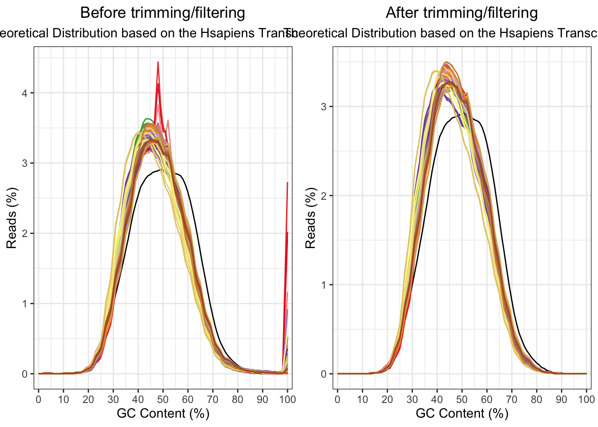
| Version | Author | Date |
|---|---|---|
| eed2e7f | Karissa Barthelson | 2021-10-22 |
Trimmed reads were aligned to the human genome (Ensembl relealease 98) using STAR 2.7.0d and summarised to each gene using featureCounts. These counts were to be used for all gene-level analysis.
fastqc_align <- list.files(path = "data/confidentialData/fastqc_align",
pattern = "zip",
full.names = TRUE) %>%
FastqcDataList()plotGcContent(
x = fastqc_align,
plotType = "line",
gcType = "Transcriptome"
) +
theme(legend.position = "none")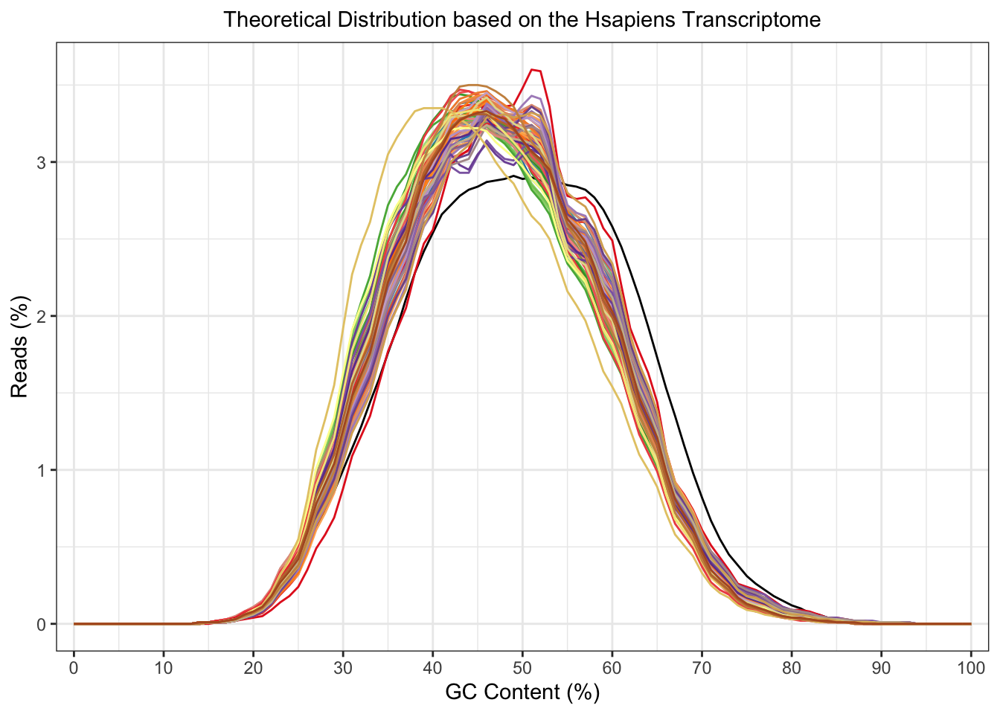
Genes which are lowly expressed are uninformative for DE analysis. Here, I will consider a gene to be lowly expressed if it contains a CPM of less than 2 in at least 33 samples (i.e. the number of AD samples). The effect of filtering is be shown in the density plots below.
a <- featureCounts %>%
cpm(log = TRUE) %>%
as.data.frame() %>%
pivot_longer(
cols = everything(),
names_to = "sample",
values_to = "logCPM"
) %>%
split(f = .$sample) %>%
lapply(function(x){
d <- density(x$logCPM)
tibble(
sample = unique(x$sample),
x = d$x,
y = d$y
)
}) %>%
bind_rows() %>%
left_join(meta) %>%
ggplot(aes(x, y, colour = diagnosis, group = sample)) +
geom_line() +
labs(
x = "logCPM",
y = "Density",
colour = "diagnosis"
)+
ggtitle("Before filtering")
b <- featureCounts %>%
.[rowSums(cpm(.) >= 2) >= 33,] %>%
cpm(log = TRUE) %>%
as.data.frame() %>%
pivot_longer(
cols = everything(),
names_to = "sample",
values_to = "logCPM"
) %>%
split(f = .$sample) %>%
lapply(function(x){
d <- density(x$logCPM)
tibble(
sample = unique(x$sample),
x = d$x,
y = d$y
)
}) %>%
bind_rows() %>%
left_join(meta) %>%
ggplot(aes(x, y, colour = diagnosis, group = sample)) +
geom_line() +
labs(
x = "logCPM",
y = "Density",
colour = "Genotype"
)+
ggtitle("After filtering")
ggarrange(a, b, common.legend = TRUE)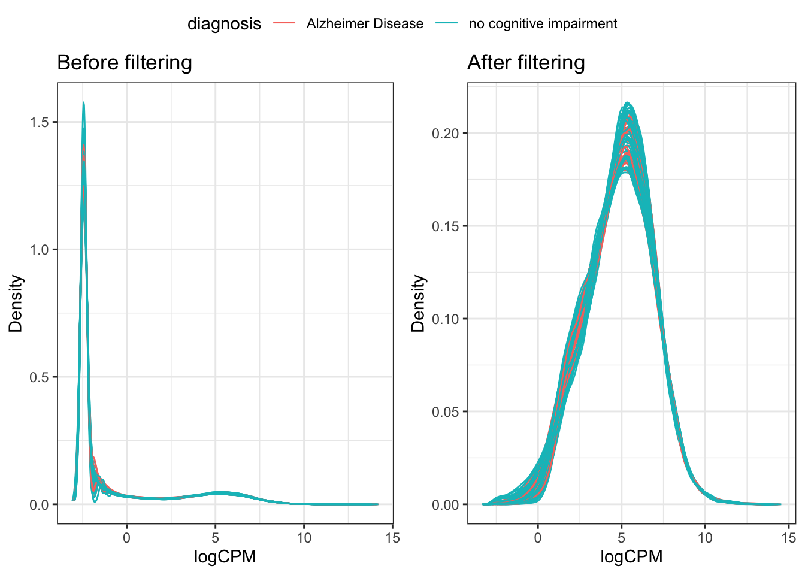
dge <- featureCounts %>%
as.matrix() %>%
DGEList(
samples = tibble(sample = colnames(.)) %>%
left_join(meta) %>%
as_tibble(),
genes = grGenes[rownames(.)] %>%
as.data.frame() %>%
dplyr::select(
chromosome = seqnames, start, end,
gene_id, gene_name, gene_biotype, description, entrezid
) %>%
left_join(gcGene) %>%
as_tibble()
) %>%
calcNormFactors()Libary sizes vary considerably, which appears to be due to samples being sequenced across multiple runs. Library sizes range between 4,978,272 and 20,875,388. Although concerning, this should be accounted for using TMM normalisation.
dge$samples %>%
ggplot(aes(x = specimenIdSource, y = lib.size, fill = sequencingBatch)) +
geom_col() +
easy_rotate_x_labels(angle = -45) +
facet_wrap(~diagnosis, scales = "free_x") +
scale_y_continuous(labels = comma) +
labs(
x = "Sample",
y = "RNA-seq library size",
fill = "RNA-seq batch"
)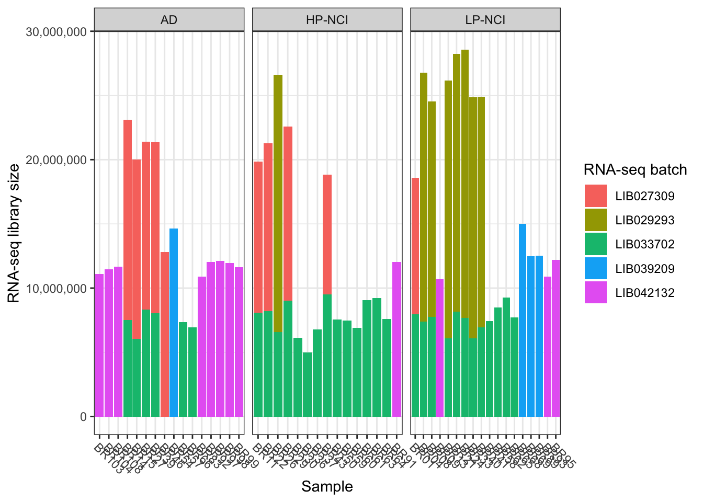
| Version | Author | Date |
|---|---|---|
| eed2e7f | Karissa Barthelson | 2021-10-22 |
dge <- featureCounts %>%
as.matrix() %>%
.[rowSums(cpm(.) >= 2) >= 33,] %>%
DGEList(
samples = tibble(sample = colnames(.)) %>%
left_join(meta) %>%
as_tibble(),
genes = grGenes[rownames(.)] %>%
as.data.frame() %>%
dplyr::select(
chromosome = seqnames, start, end,
gene_id, gene_name, gene_biotype, description, entrezid
) %>%
left_join(gcGene) %>%
as_tibble()
) %>%
calcNormFactors()I next performed a PCA on the logCPM values after filtering lowly expressed genes. I want to see how similar the samples look. Two distinct clusters are observed across PC2 (explaining ~19% of the total variation in the dataset).
cpm(dge, log = TRUE) %>%
t() %>%
prcomp() %>%
autoplot(data = tibble(sample = rownames(.$x)) %>%
left_join(dge$samples),
colour = "experimentor",
size = 4,
shape = "sex")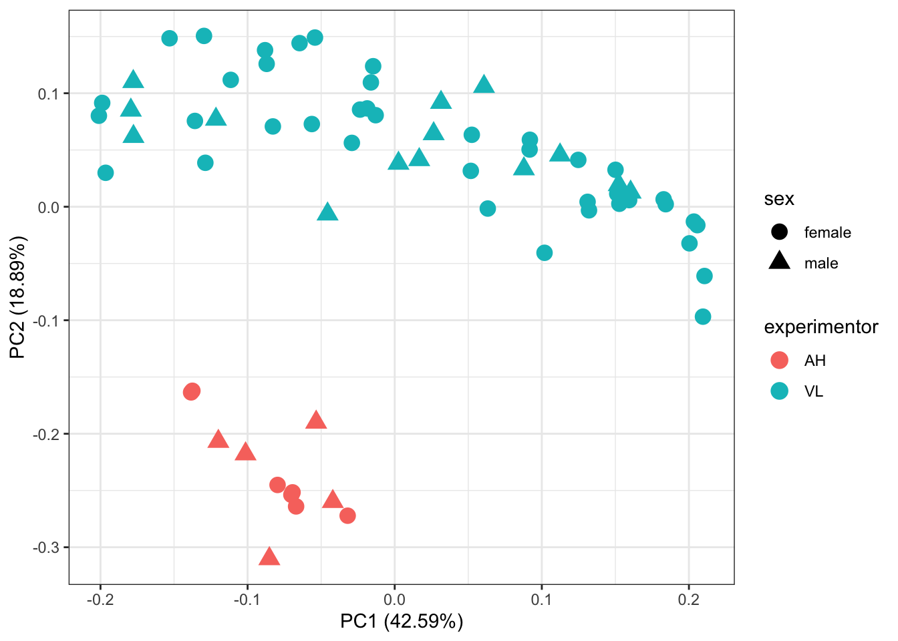
| Version | Author | Date |
|---|---|---|
| 6acc956 | Karissa Barthelson | 2021-10-23 |
I next want to see how similar the technical replicates are. In the plot below, only samples which were sequenced twice are labelled. Most technical replicates do not cluster together, meaning they are not overly similar.
cpm(dge, log = TRUE) %>%
t() %>%
prcomp() %>%
autoplot(data = tibble(sample = rownames(.$x)) %>%
left_join(dge$samples),
size = 2,
shape = "sex") +
geom_label_repel(aes(label = specimenIdSource,
colour = specimenIdSource),
max.overlaps = 15,
data = . %>%
dplyr::filter(specimenIdSource %in% dge$samples$specimenIdSource[dge$samples %>% dplyr::select("specimenIdSource") %>% duplicated()])
)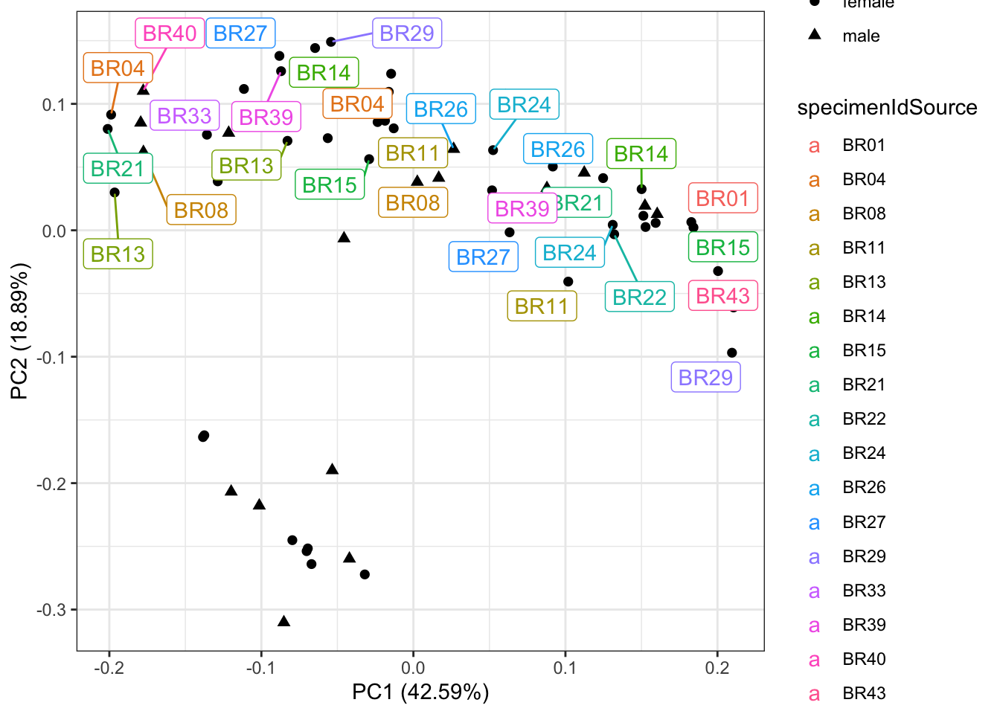
| Version | Author | Date |
|---|---|---|
| 6acc956 | Karissa Barthelson | 2021-10-23 |
One would expect that technical replicates would look mostly similar since they were derived from the same sample of iPSC neurons. But the PCA plot above shows that this is not the case. From inspection of the metadata about the samples, looks like the RNA integrity number (RIN) is fairly low in one of the library preparation batches.
techRep_brID <- dge$samples$specimenIdSource[dge$samples %>% dplyr::select("specimenIdSource") %>% duplicated()]
techRep_sampleID <- dge$samples %>%
dplyr::filter(specimenIdSource %in% techRep_brID) %>%
.$sample
dge$samples %>%
dplyr::filter(specimenIdSource %in% techRep_brID) %>%
ggplot(aes(x = sample, y = lib.size/1e6, fill = RIN)) +
geom_col() +
facet_wrap(~libraryBatch, scales = "free_x") +
scale_fill_viridis_c() +
labs(y = "Library size (millions)") +
easy_rotate_x_labels(angle = -45) +
ggtitle("Library sizes of samples which had technical replicates,\ncoloured by RNA integrity",
subtitle = "Samples are grouped by library batch")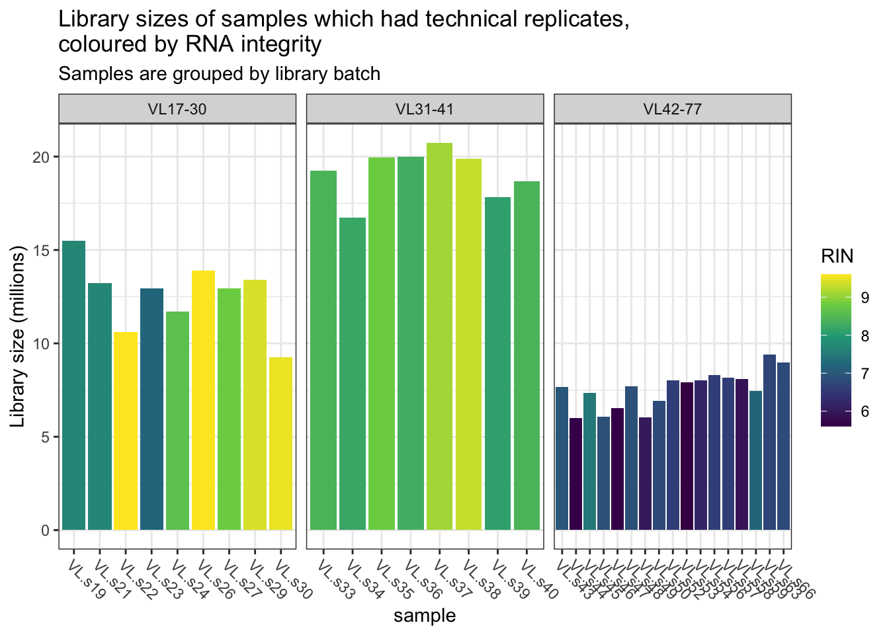
| Version | Author | Date |
|---|---|---|
| 189974b | Karissa Barthelson | 2021-10-23 |
Inspection of the two replicates for each iPSC neuron samples shows that most of the time (except for BR14, which had fairly similar RINs), there is onw “high quality” library, and one with lesser quality.
dge$samples %>%
dplyr::filter(specimenIdSource %in% techRep_brID) %>%
ggplot(aes(x = sample, y = lib.size/1e6, fill = RIN)) +
geom_col() +
facet_wrap(~specimenIdSource, scales = "free_x") +
scale_fill_viridis_c() +
labs(y = "Library size (millions)") +
easy_rotate_x_labels(angle = -45)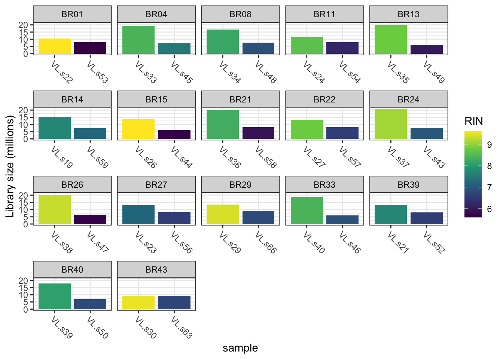
| Version | Author | Date |
|---|---|---|
| 189974b | Karissa Barthelson | 2021-10-23 |
samps2keep <- dge$samples %>%
group_by(specimenIdSource) %>%
dplyr::slice(which.max(RIN)) %>%
.$sample
dge <- dge[,samps2keep]Therefore, for this analysis, I will omit the technical replicate which had the lower RIN for each iPSC sample. This leaves 49 samples out of the original 66. This is a different strategy to Lagomarsino et al. 2021, who averaged out their replicates. I dont think this is the best way to deal with this, as the RNA was degraded in one of the technical replicates. This may influence how the reads are generated during the sequencing, and avergaing it out across a better quality sample may bring about false results.
The PCA was repeated after omitting the problematic RNA-seq libraries. Samples still seperate by library batch. So I will need to correct for this.
cpm(dge, log = TRUE) %>%
t() %>%
prcomp() %>%
autoplot(data = tibble(sample = rownames(.$x)) %>%
left_join(dge$samples),
colour = "diagnosis",
size = 4) +
scale_colour_viridis_d(end = 0.8) +
ggtitle("Diagnosis")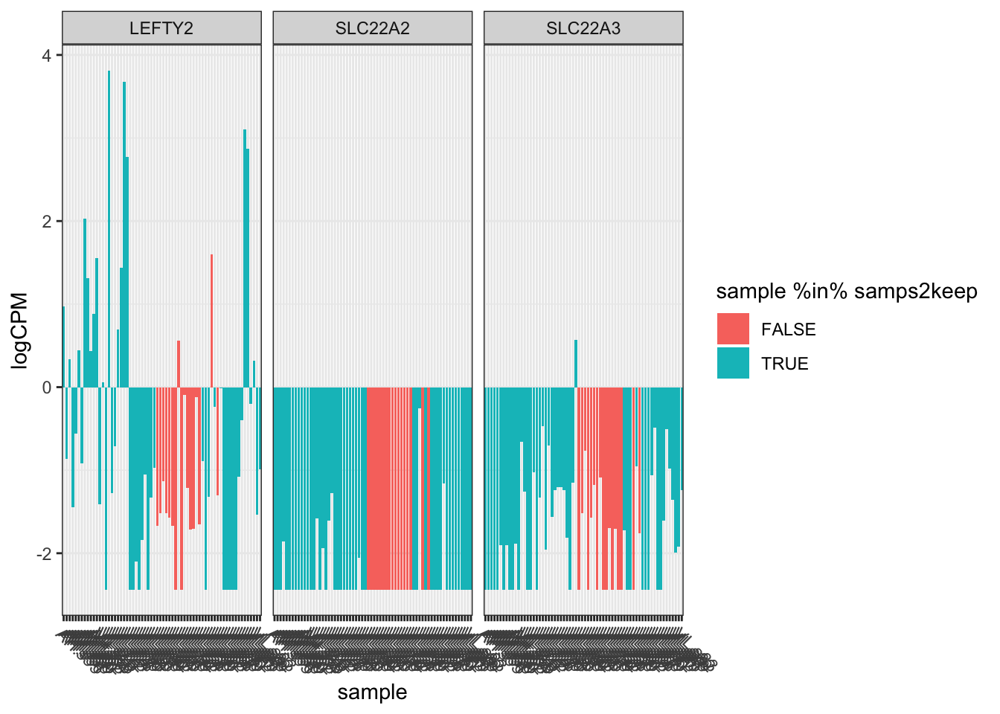
| Version | Author | Date |
|---|---|---|
| d04ae02 | Karissa Barthelson | 2021-10-23 |
cpm(dge, log = TRUE) %>%
t() %>%
prcomp() %>%
autoplot(data = tibble(sample = rownames(.$x)) %>%
left_join(dge$samples),
colour = "sex",
size = 4) +
scale_colour_viridis_d(end = 0.8) +
ggtitle("Sex")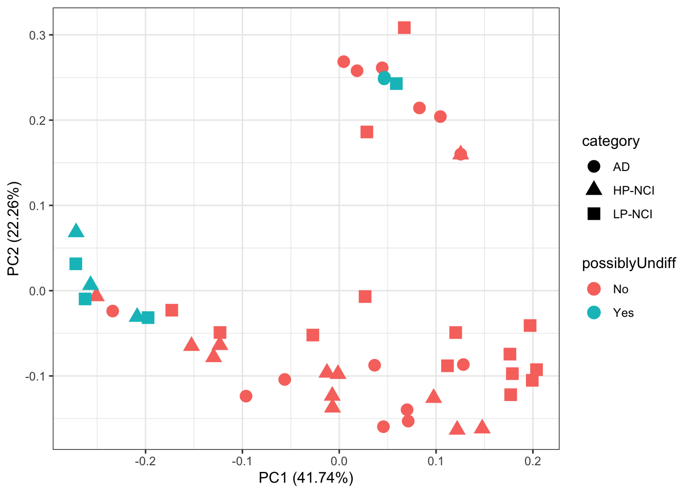
cpm(dge, log = TRUE) %>%
t() %>%
prcomp() %>%
autoplot(data = tibble(sample = rownames(.$x)) %>%
left_join(dge$samples),
colour = "libraryBatch",
size = 4) +
scale_colour_viridis_d(end = 0.9) +
ggtitle("RNA-seq library batch")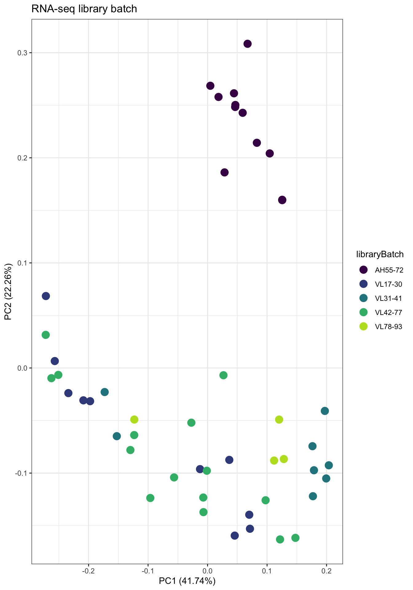
cpm(dge, log = TRUE) %>%
t() %>%
prcomp() %>%
autoplot(data = tibble(sample = rownames(.$x)) %>%
left_join(dge$samples),
colour = "RIN",
size = 4) +
scale_color_viridis_c() +
ggtitle("RNA Integrity Number (RIN)")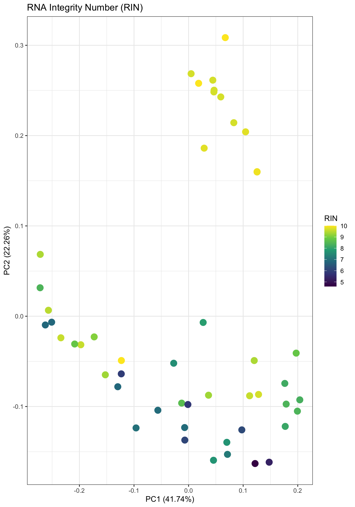
# define the batch effect to remove.
batch <- dge$samples$libraryBatch
adjustedCounts <- ComBat_seq(counts = dge$counts,
batch = batch,
covar_mod = dge$samples %>%
mutate(Braak = as.factor(Braak),
CERAD = as.factor(CERAD)) %>%
dplyr::select(diagnosis, sex, apoeGenotype,
yearsEducation, CERAD, Braak) %>%
as.data.frame()
)Found 5 batches
Using null model in ComBat-seq.
Adjusting for 15 covariate(s) or covariate level(s)
Estimating dispersions
Fitting the GLM model
Shrinkage off - using GLM estimates for parameters
Adjusting the data# repeat the PCA
adjustedCounts %>%
cpm(log = TRUE) %>%
t() %>%
prcomp() %>%
autoplot(data = tibble(sample = rownames(.$x)) %>%
left_join(dge$samples),
colour = "diagnosis",
shape = "sex",
size = 4) +
scale_color_viridis_d() +
theme(aspect.ratio = 1)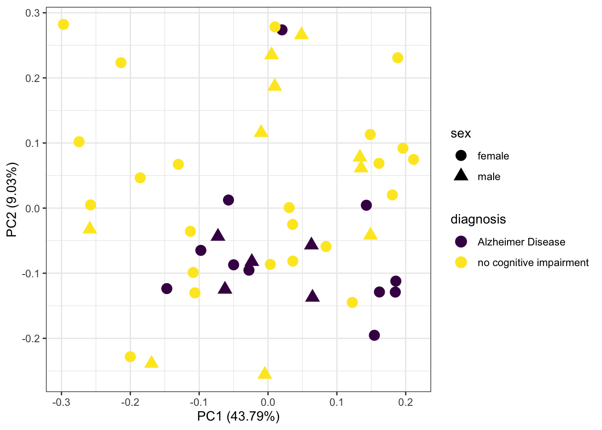
| Version | Author | Date |
|---|---|---|
| d04ae02 | Karissa Barthelson | 2021-10-23 |
sessionInfo()R version 4.0.2 (2020-06-22)
Platform: x86_64-apple-darwin17.0 (64-bit)
Running under: macOS Mojave 10.14.3
Matrix products: default
BLAS: /Library/Frameworks/R.framework/Versions/4.0/Resources/lib/libRblas.dylib
LAPACK: /Library/Frameworks/R.framework/Versions/4.0/Resources/lib/libRlapack.dylib
locale:
[1] en_AU.UTF-8/en_AU.UTF-8/en_AU.UTF-8/C/en_AU.UTF-8/en_AU.UTF-8
attached base packages:
[1] stats4 parallel stats graphics grDevices utils datasets
[8] methods base
other attached packages:
[1] ensembldb_2.12.1 AnnotationFilter_1.12.0 GenomicFeatures_1.40.1
[4] AnnotationDbi_1.50.3 Biobase_2.48.0 GenomicRanges_1.40.0
[7] GenomeInfoDb_1.24.2 IRanges_2.22.2 S4Vectors_0.26.1
[10] sva_3.36.0 BiocParallel_1.22.0 genefilter_1.70.0
[13] mgcv_1.8-36 nlme_3.1-152 pheatmap_1.0.12
[16] ngsReports_1.4.2 scales_1.1.1 edgeR_3.30.3
[19] limma_3.44.3 ggeasy_0.1.3 ggrepel_0.9.1
[22] ggfortify_0.4.12 ggpubr_0.4.0 AnnotationHub_2.20.2
[25] BiocFileCache_1.12.1 dbplyr_2.1.1 BiocGenerics_0.34.0
[28] pander_0.6.4 magrittr_2.0.1 forcats_0.5.1
[31] stringr_1.4.0 dplyr_1.0.7 purrr_0.3.4
[34] readr_1.4.0 tidyr_1.1.3 tibble_3.1.2
[37] ggplot2_3.3.5 tidyverse_1.3.1 workflowr_1.6.2
loaded via a namespace (and not attached):
[1] readxl_1.3.1 backports_1.2.1
[3] plyr_1.8.6 lazyeval_0.2.2
[5] splines_4.0.2 digest_0.6.27
[7] htmltools_0.5.1.1 fansi_0.5.0
[9] memoise_2.0.0 cluster_2.1.2
[11] openxlsx_4.2.4 annotate_1.66.0
[13] Biostrings_2.56.0 modelr_0.1.8
[15] matrixStats_0.59.0 askpass_1.1
[17] prettyunits_1.1.1 jpeg_0.1-8.1
[19] colorspace_2.0-2 blob_1.2.1
[21] rvest_1.0.0 rappdirs_0.3.3
[23] haven_2.4.1 xfun_0.24
[25] crayon_1.4.1 RCurl_1.98-1.3
[27] jsonlite_1.7.2 survival_3.2-11
[29] zoo_1.8-9 glue_1.4.2
[31] gtable_0.3.0 zlibbioc_1.34.0
[33] XVector_0.28.0 DelayedArray_0.14.1
[35] car_3.0-11 abind_1.4-5
[37] DBI_1.1.1 rstatix_0.7.0
[39] Rcpp_1.0.7 progress_1.2.2
[41] viridisLite_0.4.0 xtable_1.8-4
[43] flashClust_1.01-2 foreign_0.8-81
[45] bit_4.0.4 DT_0.18
[47] truncnorm_1.0-8 htmlwidgets_1.5.3
[49] httr_1.4.2 RColorBrewer_1.1-2
[51] ellipsis_0.3.2 farver_2.1.0
[53] XML_3.99-0.6 pkgconfig_2.0.3
[55] sass_0.4.0 locfit_1.5-9.4
[57] utf8_1.2.1 labeling_0.4.2
[59] tidyselect_1.1.1 rlang_0.4.11
[61] reshape2_1.4.4 later_1.2.0
[63] munsell_0.5.0 BiocVersion_3.11.1
[65] cellranger_1.1.0 tools_4.0.2
[67] cachem_1.0.5 cli_3.0.0
[69] generics_0.1.0 RSQLite_2.2.7
[71] broom_0.7.8 evaluate_0.14
[73] fastmap_1.1.0 ggdendro_0.1.22
[75] yaml_2.2.1 knitr_1.33
[77] bit64_4.0.5 fs_1.5.0
[79] zip_2.2.0 whisker_0.4
[81] mime_0.11 leaps_3.1
[83] xml2_1.3.2 biomaRt_2.44.4
[85] compiler_4.0.2 rstudioapi_0.13
[87] png_0.1-7 plotly_4.9.4.1
[89] curl_4.3.2 interactiveDisplayBase_1.26.3
[91] ggsignif_0.6.2 reprex_2.0.0
[93] bslib_0.2.5.1 stringi_1.6.2
[95] highr_0.9 lattice_0.20-44
[97] ProtGenerics_1.20.0 Matrix_1.3-4
[99] vctrs_0.3.8 pillar_1.6.1
[101] lifecycle_1.0.0 BiocManager_1.30.16
[103] jquerylib_0.1.4 cowplot_1.1.1
[105] data.table_1.14.0 bitops_1.0-7
[107] rtracklayer_1.48.0 httpuv_1.6.1
[109] latticeExtra_0.6-29 hwriter_1.3.2
[111] R6_2.5.0 ShortRead_1.46.0
[113] promises_1.2.0.1 gridExtra_2.3
[115] rio_0.5.27 MASS_7.3-54
[117] assertthat_0.2.1 SummarizedExperiment_1.18.2
[119] openssl_1.4.4 rprojroot_2.0.2
[121] withr_2.4.2 GenomicAlignments_1.24.0
[123] Rsamtools_2.4.0 GenomeInfoDbData_1.2.3
[125] hms_1.1.0 grid_4.0.2
[127] rmarkdown_2.9 carData_3.0-4
[129] git2r_0.28.0 scatterplot3d_0.3-41
[131] shiny_1.6.0 lubridate_1.7.10
[133] FactoMineR_2.4